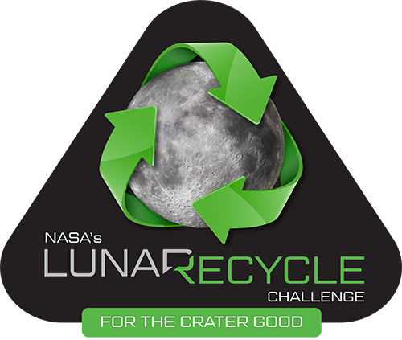
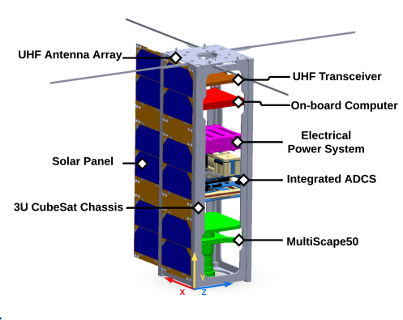
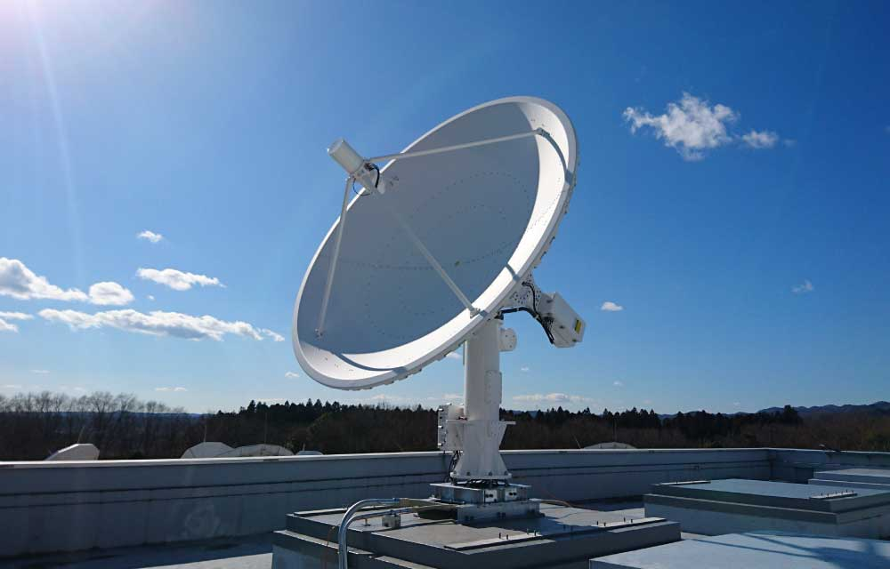
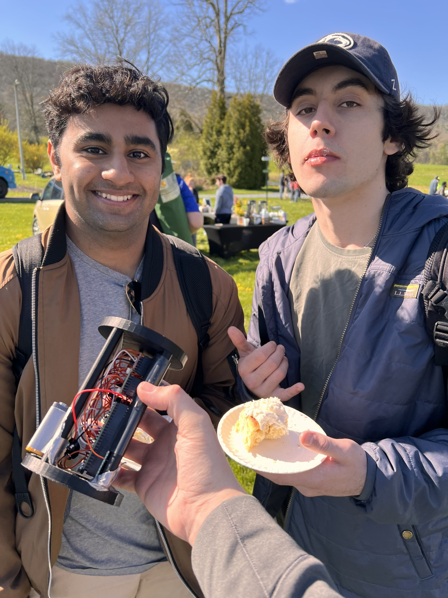
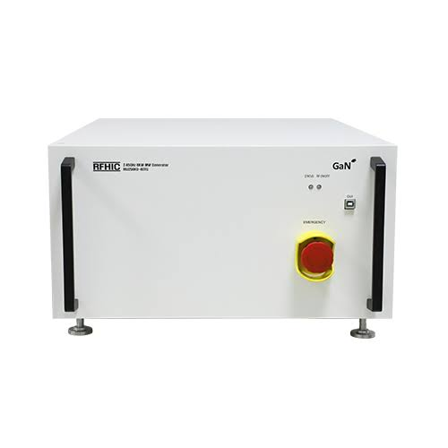

NASA LunaRecycle Challenge
Led a 20-person team to a $50,000 Milestone Round win and finalist round. Built a microwave-assisted plastic pyrolysis proof-of-concept for lunar waste recycling.
Read More ›Over the past few years, I have worked on projects ranging from NASA lunar recycling systems and CubeSat mission concepts to ground station restoration, digital twin modeling, and atmospheric sensing payloads.

Led a 20-person team to a $50,000 Milestone Round win and finalist round. Built a microwave-assisted plastic pyrolysis proof-of-concept for lunar waste recycling.
Read More ›
Developed a 3U CubeSat mission concept at SDL to detect and track ocean plastics. Simulated orbits in STK and built Python image compression for plastic detection.
Read More ›
Restoring and upgrading Penn State's legacy UHF ground station with added S-band capability to support SSPL satellite operations and student training.
Read More ›
Linked COMSOL simulations, real-time LabVIEW data, and CAD visualizations to MBSE requirements for NASA's LunaRecycle Phase 2 RECLAIM system.
Read More ›
Designed and built an atmospheric volatile gas detection payload using Arduino, Python, SolidWorks, and KiCad as part of SSPL's Student Training Program.
Read More ›
Researched HPM systems for long-term lunar missions and proposed a centralized microwave network for in-situ plastic-to-propellant recycling.
Read More ›